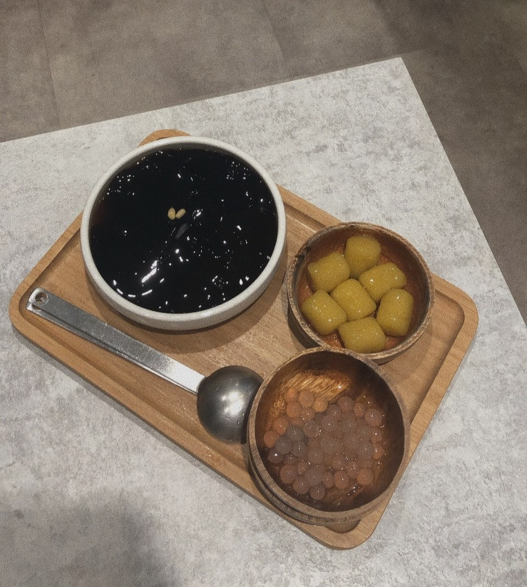
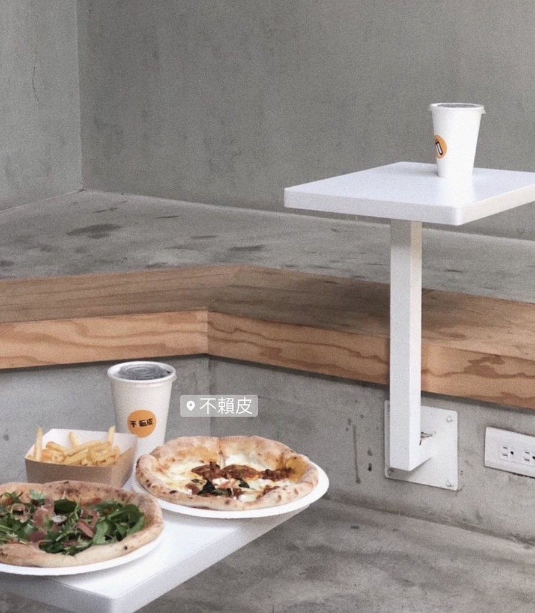
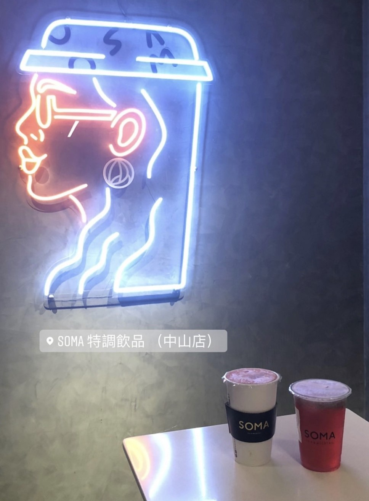
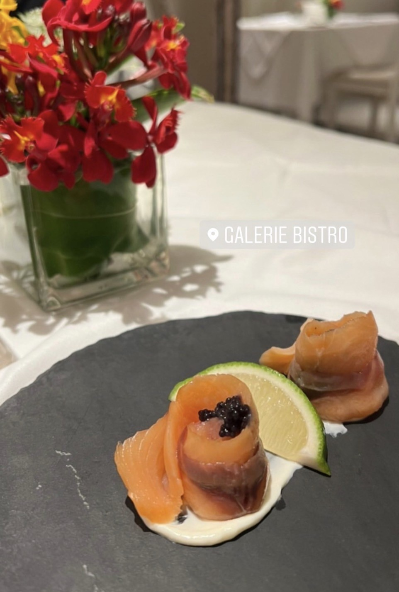
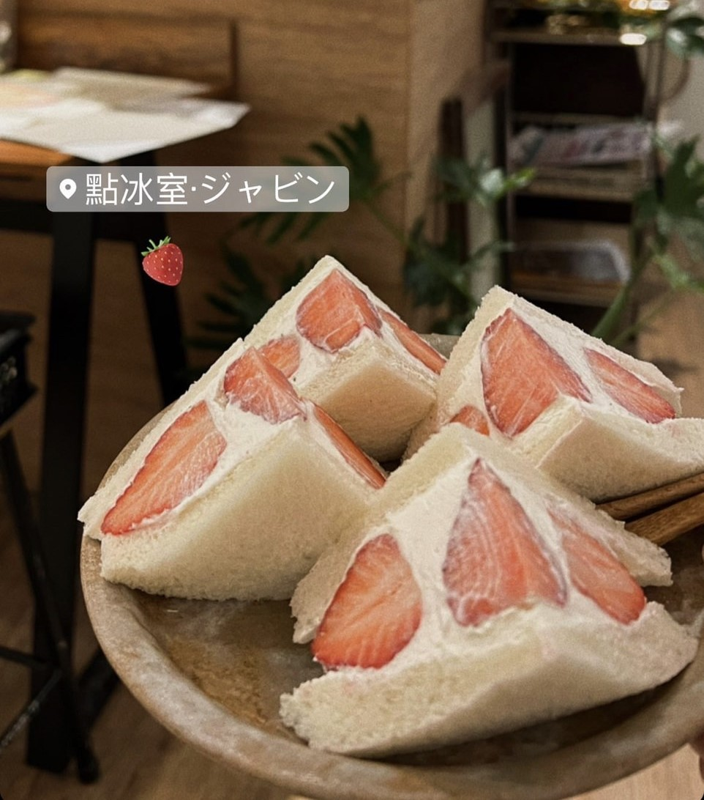
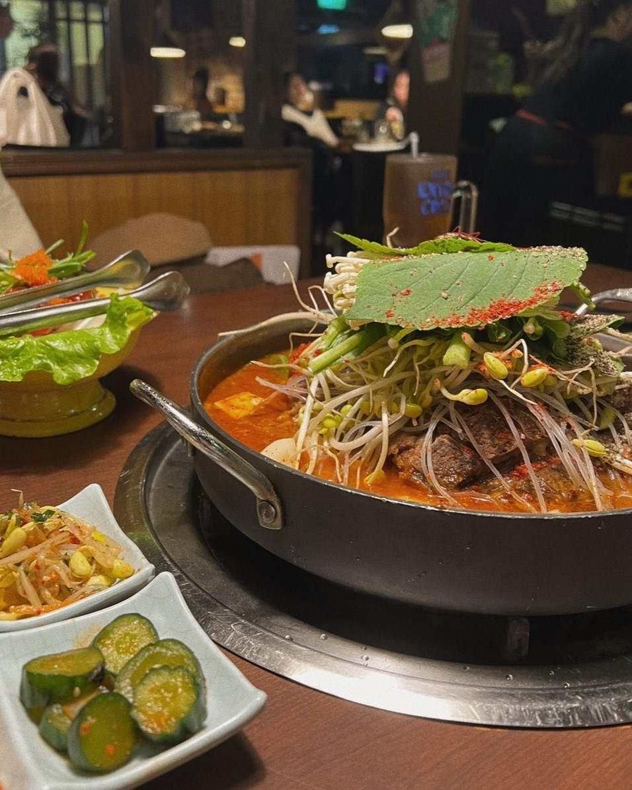
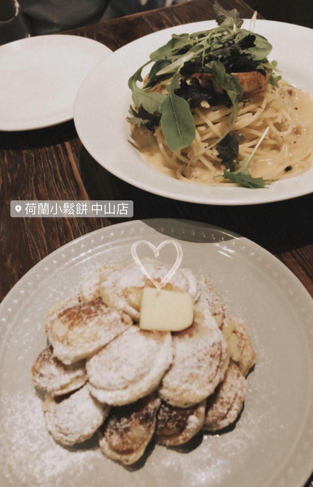
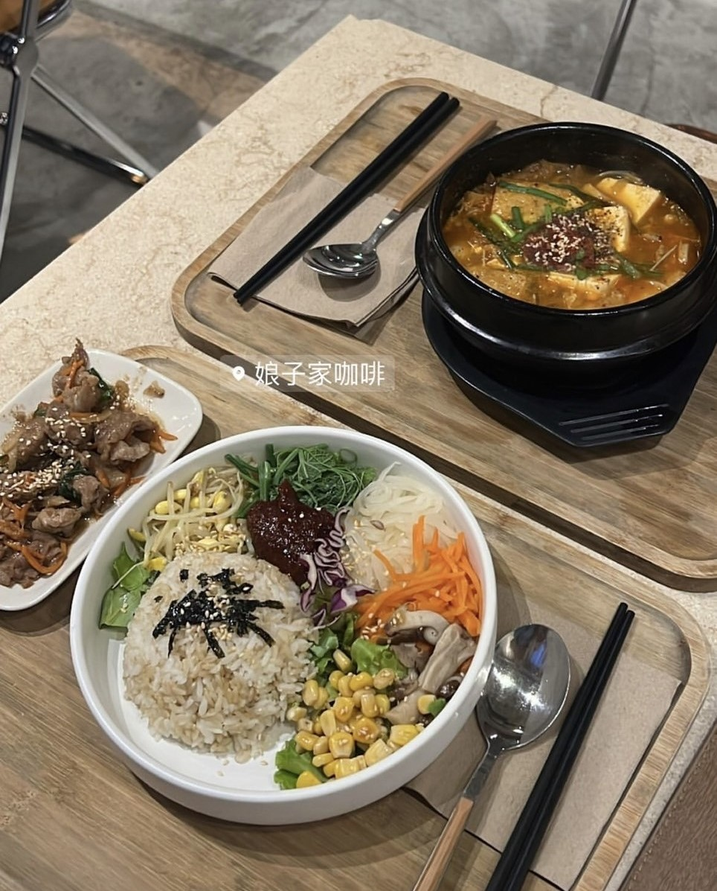
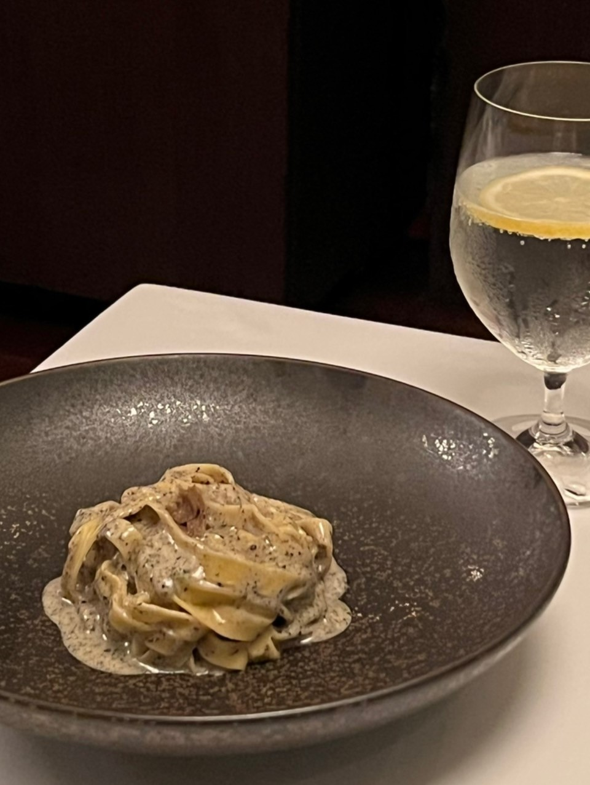

|  |
八時神仙草 中山店 電話:0229526972 地址:台北市中山區中山北路一段135巷5號 仙草不會太甜，透明的珍珠真的很Q！ 餐廳位置資訊 |
|  |
不賴皮 義式窯烤披薩 錦州店 電話:0225160798 地址:10491台北市中山區錦州街385號 薄皮比薩，料很豐富～ 餐廳位置資訊 |
|  |
SOMA特調飲品 中山概念店 Tea & Mocktail 電話:0225638286 地址:台北市中山區中山北路二段20巷23號 中山有名的飲料店！好喝～ 餐廳位置資訊 |
|  |
GALERIE Bistro 家樂利小酒館 電話:0225580096 地址:台北市大同區南京西路25巷2號 中山有名的飲料店！好喝～ 餐廳位置資訊 |
|  |
點冰室·ジャビン 電話:0907495158 地址:103台北市大同區承德路二段53巷33號 為了草莓而來的啊！份量足夠～推推！ 但要提前預約 否則可能就會吃不到！ 餐廳位置資訊 |
|  |
韓金館 電話:0225361997 地址:台北市中山區林森北路119巷68號 這家的馬鈴薯豬骨湯真的超推薦！ 豬骨入口即化，料非常多！ 2-3人一起吃！很滿足～～ 餐廳位置資訊 |
|  |
荷蘭小鬆餅南西中山店 電話:0225527796 地址:台北市大同區南京西路64巷9弄19號 一口大小的鬆餅是店裡的招牌，灑上糖粉，我沒了 餐廳位置資訊 |
|  |
娘子家咖啡 電話:0225500298 地址:台北市大同區南京西路25巷18之6號2樓 咖啡廳兼韓式料理餐廳！ 食物份量很多～餐點好吃！也很正宗 餐廳位置資訊 |
|  |
TUTTO BELLO 電話:0225923355 地址:台北市中山區雙城街25巷15號1樓 完完全全被干貝龍蝦濃湯驚豔到！真的太好喝了🤤 另外牛排外酥內嫩 肉汁在嘴巴裡面爆開 我沒了 餐廳位置資訊 |